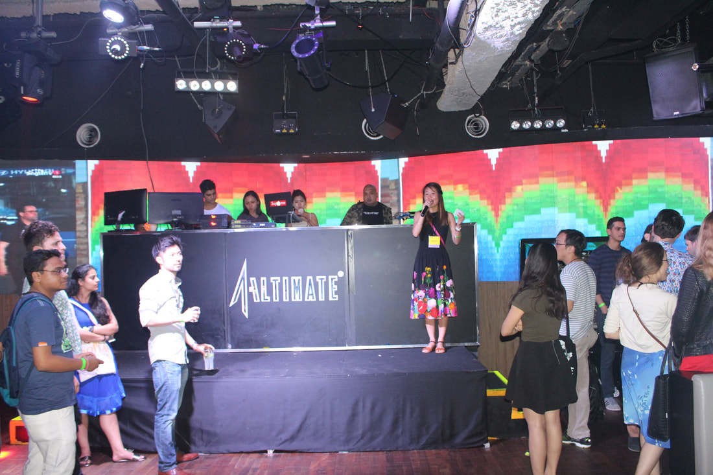

|
By Roselyne Chauvin Recently, a Brain-Art Special Interest Group (SIG) was created within OHBM. This SIG will be officially managing the Brain-Art competition and exhibits that have been organized for several years by the Neuro Bureau. Each year the Brain-Art competition receives numerous submissions; the winners of this competition are then announced during the Student and Postdoc SIG and Neuro Bureau collaborative social evening at the OHBM annual meeting. Since the first exhibition in 2011, Brain-Art exhibitions have always been a great success. I was really happy to learn about the creation of the Brain-Art SIG and curious about the aim and perspective of development of its board. By officializing a Brain-Art dedicated group, art might start to take a bigger place in the OHBM scene.  OHBM 2018 Brain-Art awards given during the Student-Postdoc SIG and Neuro Bureau social evening I’ve always valued the interaction between Art and Science. It’s an amazing way to reach out to the general public and scientific pairs, and thus to promote scientific content. Every type of art can be used as a vessel to talk about science, such as music, dance, theatre, literature or painting. It can come directly from researchers or from their collaboration with artists. Programs such as Artists in Residence or Artists in lab promote that artist-scientist interaction by proposing to artists to stay few months in a lab in order to learn and get inspired for their art. The other way around works as well, researchers might see their work with another angle by doing art or interacting with artists, revealing new perspective. As the Brain-Art competition 2019 just opened, let’s discover a bit more about this Brain-Art SIG and review the past editions of the competition and exhibits. You might even find inspiration on the way to participate in this year’s edition of the competition. To get to know about the Brain-Art SIG mission, I asked the board their personal experiences with Brain art and how this SIG came about. Brain-Art SIG vision for OHBM: Interview with the board Roselyne Chauvin (RC): So what is the view of Brain-Art SIG’s officials on art and science interactions and, personally, what motivated you to join the board of this SIG? Alain Dagher, Chair (AD): My answer is roughly half-way between “Because Daniel M asked me” and “because art and neuroscience both often seek to explain the human experience.” Valentina Borghesani, Secretary (VB): I agree with Alain: human beings are way too complex to be tackled only from a scientific perspective, one needs to embrace diverse forms of expression/investigation. Personally, while being totally void of any artistic talent whatsoever, I love being involved in the scientific community and do…the leg work! One day I saw on the brainhack slack workspace that they were looking for volunteers for this to-be-established SIG and… First lesson learned: things do escalate quickly around these folks! Aman Badhwar, Chair-Elect (AB): As far back as I can remember, I have been fascinated by art, and started painting as a child. In my view, science and art both seek to observe, record and explain the world around us, just using different means. Both have their theoretical frameworks, evolving techniques, and schools of thought. Above all, both scientists and artists need to be creative and insightful in order to make meaningful contributions to their respective fields. In one direction, I use painting as a means of communicating ideas from my scientific work to the public using the more visceral, emotional language of art. In the other direction, when grappling with a thorny scientific problem, the distinct focus required while painting frees my subconscious mind from conceptual boundaries and dogmatic ideas, and allows me to return to my scientific work with fresh eyes. Some people have told me that one cannot be a scientist and an artist at the same time, and that it is necessary to choose. Personally, I find that art synergizes with my academic endeavours, and provides me with a clarity that is sometimes hard to find in the barrage of scientific data. I was first told about Neuro Bureau and its OHBM art competition by Pierre Bellec. It was 2014, and I was having my first solo art exhibit at CRIUGM, University of Montreal. The next thing I know I was having this intense conversation with this “highly energetic, mile a minute person” (well compared to me as I internalize my energy, and Pierre, I would say, is the opposite), who was convinced that I needed to submit my art to the Neuro Bureau art competition. I did not know who Pierre was, had never been to the OHBM, but the art was submitted, and a couple of months later, again a very enthusiastic Pierre informed me that I had won one of the categories. Life has a funny way of working sometimes, because the next year (2015), I found myself being a postdoc at Pierre B’s lab, going to my first OHBM meeting, and being intensely involved in the Neuro Bureau/OHBM art activities. RC: Your Brain-Art SIG page states that you aim to:
Outside of the exhibit and competition, what other tasks would you like to start to reach these goals? I know that there is always multiple BrainHack projects related to new data-visualization tools. Will you consider proposing a special BrainHack on data visualization mixing scientist and artists? Or will we see the start of graphical abstracts for OHBM? AD: I think that is a great idea. At the prosaic level, better data visualization can improve communication of scientific results, and ease the work of reviewers (making your paper more likely to be published). But just as we need to emphasize the aesthetic side of brain imaging visualization, we also need to incorporate concepts of openness and reproducibility, i.e. make sure the data-to-image generation process is transparent. VB: Improving our current scientific visualization practices is clearly one of the expected, let’s say, side effects. Graphical abstracts and cross-disciplinary hackathons sound great way to enrich our SIG activities! However, I would like to point out that our concept of Art cannot be resolved in visual arts, as we clearly stress with this year’s award categories. Only embracing the heterogeneity of tools and perspectives the Arts can offer us, we will appreciate the full potential of this dialogue. Neuroscience can definitely exploit this diversity when it comes to outreach, both within (interactive graphical abstracts? performative poster presentations? Why not!) and outside our community (e.g., reach the general public honoring the different ways information can be assimilated and digested). But the benefit of integrating more insights from the Arts will also be seen in how it will unleash scientists’ creativity and divergent thinking. It’s not only about finding new ways of showing our results, but also exploring new point of views. RC: For now, you have a board that is composed of:
RC: I guess you might need more manpower to go on with these tasks, are you looking for more people in the SIG?
AD: Yes. We always need people to assist during OHBM for setting up the exhibition and helping during the conference. Also, always happy to see new ideas to take the project in new directions. RC: I think the transfer of Brain-Art activities from the Neuro Bureau to this Brain-Art SIG is a great initiative to get more attention on the exhibit and to be able to communicate specifically about art. What motivated and when did you take the decision of creating the Brain-Art SIG? VB: Over the years, the community of OHBM members interested in art-related initiatives kept growing. Giving it structure within an official SIG seemed like the best option to support its evolution. One key aspect is that the SIG promotes an open and transparent process allowing every OHBM member to contribute, e.g., joining our Slack community, following our activities online, volunteering to help, or joining as one of the SIG officials. Retrospective of Brain-Art Competitions and Exhibits The Neuro Bureau fostered the Brain-Art competition yearly since 2011. Every year, everyone can participate to the competition by submitting art pieces to specific categories. There is no limit in the number of submission per person. The constant categories are:
In addition, one or two special topics are proposed every year and reflected trendy topics in the field of neuroimaging:
As for the main contributors and most consistent over the years, we can find several submissions from Katja Heuer, AmanPreet Badhwar, Roberto Toro, Michel Thiebaut de Schotten, Benedicte Batrancourt or also Lucina Uddin. It’s only recently that the Brain-Art exhibit was proposed. The first exhibition called “Crossing fibers: A retrospectroscopic view” was proposed at OHBM 2015 in Hawaï and later displayed in Germany (2015,honolulu, berlin and Leipzig). This exhibits featured the best art from the Brain-Art competition and, to support the initiative, people could buy posters of their favorite piece. In OHBM 2017, a new exhibit was proposed to present the new art from the Brain-Art competition (read more about the OHBM 2017 exhibit) and presenting an art piece called Dream Sessions. Created by Nathalie Regard and Roberto Toro, this dream log of 101 nights was not only a piece of art but also a tool to study the EEG recordings done during these nights. In OHBM 2018, together with the Brain-Art competition best art pieces, the exhibition featured a local singaporean artist, Shubigi Rao (2018), inspired by her knowledge of neuroscience. Conference attendees were able to discover mesmerizing representations of creatures with complex nervous system. The Brain-Art SIG is currently working on setting up the exhibit of OHBM 2019 that is entitled: “Ars Cerebri : Creativity stemming from, and at the service of, neuroscience.” Inspired by the ancient Muses, this year exhibition will feature pieces covering multiple domains of the Arts sharing one common denominator: they are the fruits of the creativity that stems from or is inspired by neuroscientific research. Whether established or emerging, different artists and scientists will contribute their personal and unique works produced under the Muses' power of inspiration. Static as well as dynamic pieces will be exhibited during the main conference (June 9-13, 2019) in the heart of the Auditorium. In addition, a special evening event showcasing live performances will be held on Monday the 10th. The SIG just opened The Brain-Art Competition 2019 and this year, we see a renew of categories with an emphasis on different types of art and more dimensions. A major novelty is the dedicated categories for text and live performances. This year's exhibit will go further than visual arts. The categories for this are:
You can submit your art pieces/illustration/representation before the 11:59PM CDT, Wednesday, May 29th, 2019. To stay updated and participate in the Brain-Art SIG activity, join their slack workspace! Twitter handle: https://twitter.com/OHBM_BrainArt Slack workspace: ohbmbrainart.slack.com
0 Comments
Your comment will be posted after it is approved.
Leave a Reply. |
BLOG HOME
Archives
August 2023
|
 RSS Feed
RSS Feed